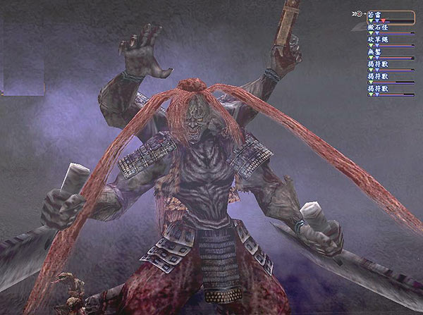

三輪山任務
繼「叢雲堂任務」之後，玩家進入叢雲堂除了修鍊和拿入魂石之外，當等級愈高後，叢雲堂的怪也會慢慢地無法滿足等級高的玩家，
所以大家紛紛轉向打王，或是拿「神靈的路標」，也就是常聽到的「三輪山任務」，或是「四聖獸任務」。
至於任務要怎麼開啟呢？
首先到紀伊的雜賀鄉的神社，找一個叫作「彌生」的巫女，她會要求玩家協助打敗若雷，但這之前會請玩家先打敗四聖獸。
當然，也可以不先接任務，先把「蒼海的龍珠」、「朱雀的羽毛」、「白虎的咆哮」先準備好，再去接任務，直接打玄武。
要解這個任務，強烈組成一個固定團，花個一週的時間， 7 個人都取得需要的任務道具，再一起上三輪山。
不然，跟別人組，運氣好可以拿到任務道具，運氣不好就什麼都沒有，但即使自己都集滿了任務道具，
又沒有戰友可以一起上三輪山去挑戰大財主，那也只能去看看漂亮的風景！
下面的隊伍模式，提供給各位玩家作個參考，前提是這些職業都已修完特化書目錄了喔！
當然，不管什麼樣組成的隊伍，只要默契好，互相支援得宜，都會是很好的團隊！
■組隊建議
• 1. |
鎧鍛、召喚陰陽師、陰陽道陰陽師、武藝侍、暗殺忍、神通力藥師、雅樂巫女 |
• 2. |
砲鍛、召喚陰陽師、陰陽道陰陽師、武藝侍、暗殺忍、醫學藥師、雅樂巫女 |
• 3. |
鎧鍛、陰陽道陰陽師、武藝侍、軍學侍、暗殺忍、神通力藥師、雅樂巫女 |
尋找玄武的鑰匙
■取得鑰匙方法
神職的「睡眠引誘」：讓對象 NPC 在一定時間內陷入睡眠，需要價值 7 以上的樂器。
藥師的「安眠藥處方」：使用睡眠藥，讓對象 NPC 在一定時間內陷入睡眠，需要安眠藥。
陰陽師的「魅妖之術」：讓妖怪種族在一定時間內陷入睡眠狀態。
忍者的「調教」：動物種族在一定的時間內陷入睡眠，需要帶骨肉。
◆蒼海的龍珠◆
■青龍資訊
地圖位置 |
越前，東尋坊洞空， b-D |
青龍隊伍 |
青龍、青面剛士、青面剛士、勇猛龍氣、青龍眷屬 |
重生時間 |
四小時十分 |
掉落物品 |
蒼海的龍珠、偃月龍刀、龍之淚 |
青龍技能 |
龍顎、破咬、逆麟、甦醒、反擊 |
進攻順序 |
一：青龍眷屬→青面剛士→青面剛士→勇猛龍氣→青龍
二：青面剛士→青面剛士→勇猛龍氣→青龍眷屬→青龍 |
青龍的位置，在越前的東尋坊洞穴裡。從東尋坊的門口走到青龍的位置，比起朱雀和白虎的路途，其實並不太遠。
不過，從潮州海賊那邊開始，就無法隱身往前走，必須靠讓 NPC 陷入睡眠的方法，加速隊伍的移動。
要到青龍位置之前，會有一個水神在青龍的入口處把關，這時也不用太害怕，
如果不想與水神戰鬥，可以使之安眠，就可以直接前往青龍的所在處了。
打擊青龍有妙法
許多人在打青龍時，第一個攻擊目標大部份都是「青面剛士」，主要是牠的攻擊力滿強的，也會一些輔助性的法術。
不過，也有人是先打「青龍眷屬」，接著才是打「青面剛士」，
至於青龍，則是交由隊上的陰陽道的陰陽師，使用「真．太極」來對付。
青龍的攻擊力強，所以隊伍的盾一定要拉住青龍，以免青龍直接攻擊後衛，尤其是要保護好陰陽師和神職。
另外，也要有人專門顧好青龍，必要時要使用發麻斬（忍者）、沈默（忍者、侍）或刀背擊（侍）來止術，
有時候藥師開場的「攻擊咒霧」無法順利的掛在王身上時，可以請召喚陰陽師使用「百鬼夜行」來降低攻擊。
◆白虎的咆哮◆
■白虎資訊
地圖位置 |
越前，東尋坊洞空， b-D |
白虎隊伍 |
白虎、白虎護衛獸、白虎眾密教僧、白虎總管、白虎近侍衛兵 |
重生時間 |
二小時十五分 |
掉落物品 |
白虎的咆哮、三鈷鐲鈷杵、龍之淚、白虎紋披肩（任務獎賞，女性）、白虎紋印金織（任務獎賞，男性） |
白虎技能 |
破咬、甦醒 |
進攻順序 |
一：白虎護衛獸→白虎總管→白虎近侍衛兵→白虎眾密教僧→白虎
二：白虎護衛獸→白虎總管→白虎近侍衛兵→白虎→白虎眾密教僧
|
白虎的位置，在伊賀的忍者砦的最深處。這裡比其他兩個區域，路程是既遠又危險，處處充滿了危機。
整個忍者砦，就像是一個大迷宮，走錯一步，後面就步步錯。
忍者砦從進門，一路都可以用隱身的方式到達「隙伺」那裡，在隙伺之後的 NPC 幾乎都會識破，
而利用佛像進入另一個區域後的 NPC ，也都個個有識破的本領，因此這時安眠技能又派上用場了。
不過，在忍者砦要使用安眠，施法者和 NPC 的位置和角度要調整好，不然很容易失敗。
在挑戰白虎前，要先突破 4 個白虎眾的守護，這四個白虎眾的戰鬥力非常得高，搜尋的範圍又廣，也相當地棘手。
利用安眠的技巧躲過白虎眾後，隊伍要立刻移動到堡虎翁的後方，也就是白虎那裡，避免引到白虎眾，而陷入危機。
在挑戰白虎前，要先向堡虎翁接任務，才能挑戰白虎，所以隊伍中的人，如果都沒有接過任務的人，要記得向堡虎翁接任務，
不然隊友都接了，自己沒有接，很有可能發生你被白虎的吼聲給吼到忍者砦門口的情形喔！
※另外，還有一點，如果全隊的人都接了任務，最後要繼續挑戰白虎的話，會面臨堡虎翁不讓你挑戰的情況時
，只要有一個隊友，將堡虎翁的任務獎賞道具丟棄，就可以再重新接任務了。
白虎的隊伍裡，要先解決掉攻擊力強的白虎護衛獸，接著是會一直放「詠唱之韻．極」的白虎總管，最後是白虎近侍衛兵和白虎密教僧。
至於白虎，還是交給陰陽道的陰陽師來執行。另外，也要有人專門顧好青龍，必要時要使用發麻斬（忍者）、
沈默（忍者、侍）或刀背擊（侍）來止術，有時候藥師開場的「攻擊咒霧」無法順利的掛在王身上時，
可以請召喚陰陽師使用「百鬼夜行」來降低攻擊。

◆ 朱雀的羽毛
◆
■朱雀資訊
朱雀隊伍 |
朱雀、赤衣天火、赤誠烈女、赤誠烈女、赤熱烈士、烈火羅漢 |
重生時間 |
一小時四十分 |
掉落物品 |
朱雀的羽毛、焰舞、龍之淚 |
朱雀技能 |
破咬、甦醒、火焰羽毛 |
進攻順序 |
一：赤衣天火→赤誠烈女→赤誠烈女→赤熱烈士→烈火羅漢→朱雀
二：赤衣天火→赤誠烈女→赤誠烈女→朱雀→赤熱烈士→烈火羅漢
|
朱雀的位置，在相模的地獄谷的最深處。
這裡的路程算是最簡單的，可以說是一路?到底，只有途中會有幾隻的叢原火會識破，基本上其他都只要隱身一直跑就好了。

朱雀是這三隻聖獸裡，重生時間最快，也最好打倒的王。
只要先把，赤衣天火、赤誠烈女、赤誠烈女先解決掉，避免被中「眼光」，而導致三回合無法動彈，
雖然烈火羅漢也會「死亡的呼喊」，但是比起「眼光」的效果，那是小巫見大巫。
而朱雀也一樣，還是交給陰陽道的陰陽師來執行。
在這裡，藥師開場的「攻擊咒霧」幾乎是無法掛在王身上，因為這裡是地獄谷，
是火屬性的大本營，所以請召喚陰陽師使用「百鬼夜行」來降低攻擊。
◆
玄武－封印的寶珠◆
■玄武資訊
玄武隊伍 |
玄武、千引警衛兵、千引守巫女、千引術士、雜賀鄉醫生 |
重生時間 |
彌生召出 |
掉落物品 |
無 |
玄武技能 |
啃咬、甦醒 |
進攻順序 |
一：千引術士→雜賀鄉醫生→千引守巫女→千引警衛兵→玄武
二：千引術士→千引守巫女→雜賀鄉醫生→千引警衛兵→玄武
|
玄武跟其他三隻聖獸比起來，難度算是在中間，最難打的應該是青龍。
在這裡，最先要解決掉的是「千引術士」，接著是「雜賀鄉醫生」，
為什麼不是巫女而是醫生呢？因為這裡的醫生會一直放「全體完全治療」。
※打完玄武後，就可以向彌生報告，並拿到「封印的寶珠」，這是可以弱化若雷的腕力和耐久力的寶珠喔！
◆ 若雷－神靈的路標◆
■若雷資訊
若雷隊伍 |
若雷、搬石怪、砍草繩、無鏨、揭符獸、揭符獸、揭符獸 |
重生時間 |
二小時 |
掉落物品 |
黑暗三連火槍（天下一品） |
若雷技能 |
敲破、甦醒、沈默之霧．壹、定身術 |
封印的寶珠 |
弱化若雷的「腕力」和「耐久力」，時間三十分鐘，一場只能用一個 |
進攻順序 |
若雷→搬石怪→砍草繩→揭符獸→揭符獸→揭符獸→無鏨 |
若雷的位置，在紀伊的千引石洞穴的最深處。在前往若雷的路上，要先通過千引石的洞穴大蛇。
這隻洞穴的生命力不多，但是身邊的怪也不弱，但是比起若雷，算是暖身的運動。
若雷的身邊有許多的怪物守護者，玩家可以選擇從左方切入，先將搬石怪、砍草繩及揭符獸清掉，就可以準備挑戰若雷了。

戰鬥的開始，由一個人先丟「封印的寶珠」，畫面就會出現訊息，弱削的時間就會開始計算，
此時若再有人丟「封印的寶珠」，是會出現無效的訊息。
由於若雷可以使用「封印的寶珠」，如果在一開場時就使用，攻擊對像要集中在若雷身上，因為這時若雷的攻擊和防禦能力都被降低。
在若雷身邊的怪，攻擊加和防禦力都很強，對於一些抗性也很高，盾要拉怪也是很不好拉，
尤其是揭符獸，三隻都會專門去攻擊後衛的玩家，因此除了主要拉王和攻擊王的人之外，
其他的人可以先幫忙清掉揭符獸，以免後衛被揭符獸的物理攻打到失血過多死亡。
最後，玩家只要擊敗若雷後，就可以回到雜賀鄉的神社去找彌生報告，並獲得「神靈的路標」，這也就表示有資格可以進入三輪山囉！
相關資訊
●三輪山地圖&解說
●東尋坊地圖&解說
●忍者砦地圖&解說
●地獄谷地圖&解說
●千引之石洞穴地圖&解說